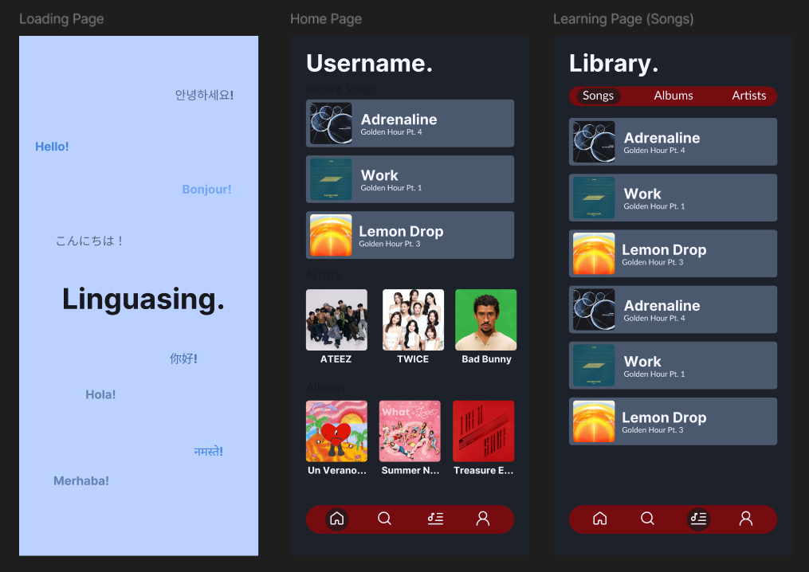
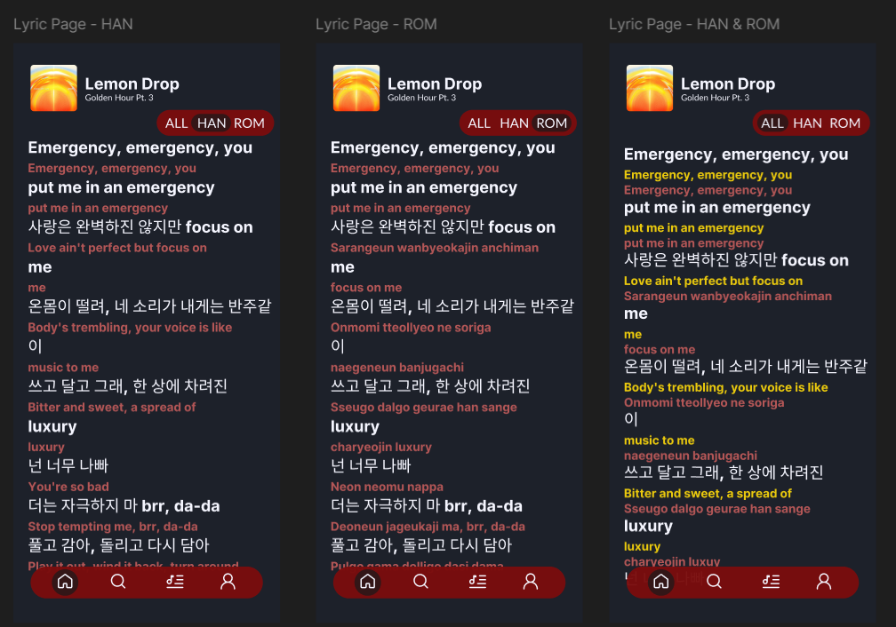

Linguasing
A Figma concept that combines music discovery with language learning, allowing listeners to explore song lyrics in different writing systems.

The Idea
As a long-time listener of Kpop (8 years) and being curious about music in languages I cannot even speak, I always found myself, trying to search for translations or learning through different websites and youtube videos on how to sing a song that I love. Unfortunately, all these solutions either lacked one feature, but had another feature which I enjoyed, so I settled for switching between sites and videos. The idea of Linguasing is to combine all these features into one.
The lyric experience
Users can switch between Hangul (Korean writing system), romanisation or a combined view. The colour treatment distinguishes each representation while keeping the original lyrics visually prominent and easy to follow. This helps with the initial learning stages of trying to sing a song, with a writing system the user is familiar with, but then once a user is confident about their reading skills, they can try to learn by directly reading Hangul, for example.

The Plan
I would build Linguasing with Vue.js for the interface and a Node.js/Express backend connected to SQLite. The Spotify Web API would let users search for songs and display track information, while an embedded Spotify player would handle normal playback. SQLite would store the lyric versions, translations and saved songs. Users could switch between Hangul, romanisation and a combined view as they learn. I would also like to add slower playback speeds so users can practise difficult lines at their own pace. I would start with one song, test the learning experience, then gradually add more.